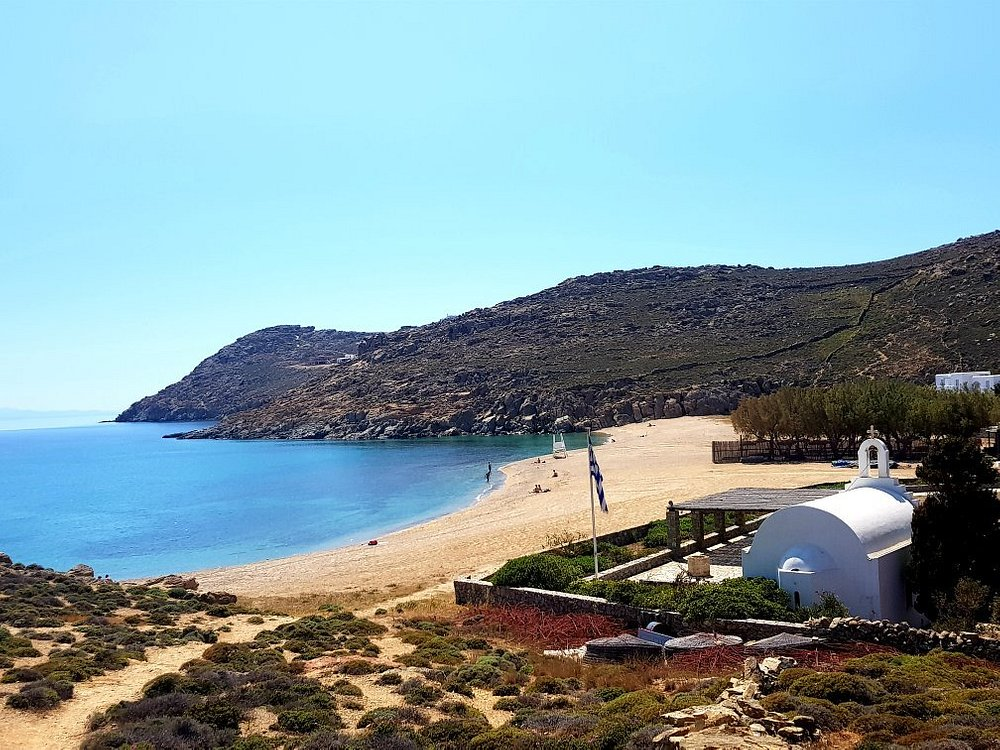
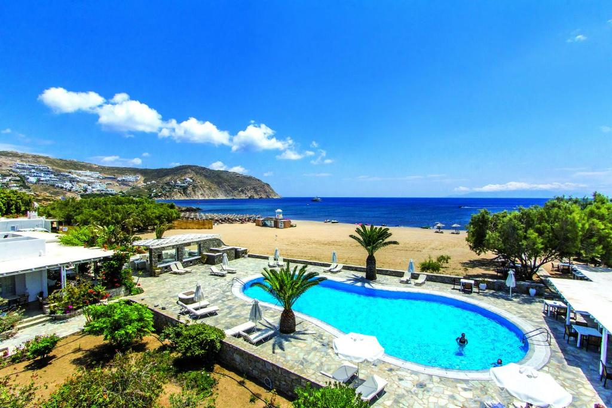

Visit the beach
Soak up the sun at Agrari Beach. A long sandy beach that has plenty of space for you and your family. It is usually split in half -- umbrellas and subeds on one side and sand on the other.It offers crystal-clear water and more reasonably-priced restaurants, when compared to the rest of Mykonos. You'll then find one of the most relaxing beaches on the island.

How to get to Agrari Beach
It is just a 25 minute ride from Mykonos town. Alternatively, you can take the bus to Elia Beach, and then walk for 5 minutes over the rocks to Agrari.For more information about taking the bus to the beaches look here: Mykonos Buses
Where to stay
The Sunrise Hotel & Suites is perfect for families or groups that want to stay in a quieter beach, this hotel stands right by the sea, with its pool almost on the sand.Most of the rooms have a sea view, and the largest ones accommodate as many as six people.
More Details and Prices 